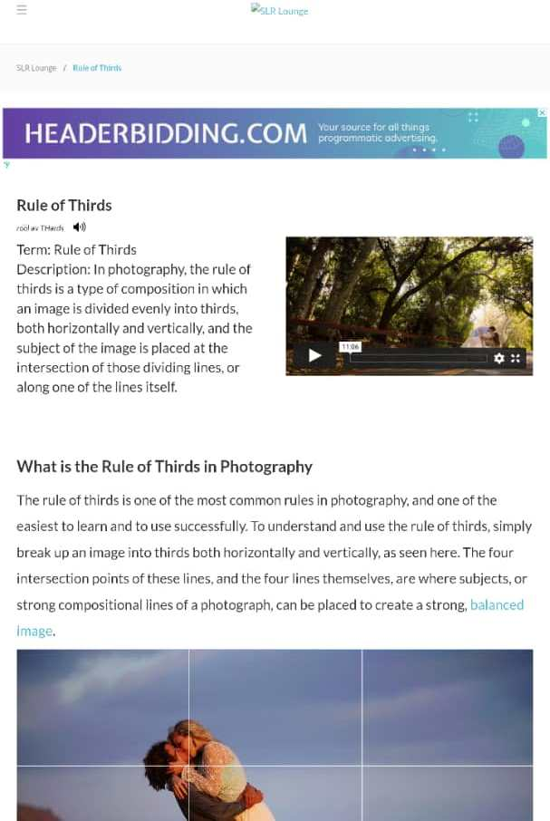

Visual Hierarchy
CEO of Colossal Media, discusses the growing interest and unique perspective in handcrafted signs and murals. The future, with the growing number of technology innovations and push for cheaper products, can seem like a scary word for businesses that are reliant on skilled labor and selling premium handcrafted products—unless you’re Kelly Peppers, CEO of Colossal Media.
She’s betting big that training skilled labor and focusing on the uniqueness of handcrafted signs will continue to ensure the upward trajectory of her business. That bet is at the core of a company that single-handedly revived the hand-painted sign industry and made millions of dollars at the same time.
Hick's Law
Hick-Hyman Law is named after a British and an American psychologist team of William Edmund Hick and Ray Hyman. In 1952, this pair set out to examine the relationship between the number of stimuli present and an individual’s reaction time to any given stimulus. As you would expect, the more stimuli to choose from, the longer it takes the user to make a decision on which one to interact with.
Users bombarded with choices have to take time to interpret and decide, giving them work they don’t want.
Rule of Thirds
Rule of Thirds is one of the most common rules in photography, and one of the easiest to learn and to use successfully. To understand and use the rule of thirds, simply break up an image into thirds both horizontally and vertically, as seen here. The four intersection points of these lines, and the four lines themselves, are where subjects, or strong compositional lines of a photograph, can be placed to create a strong, balanced image.